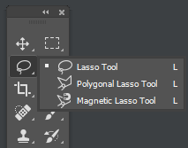
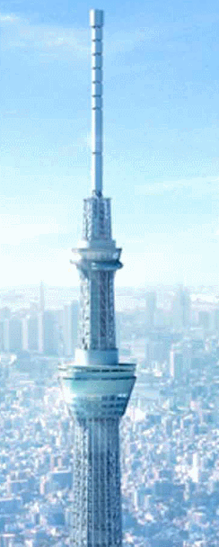
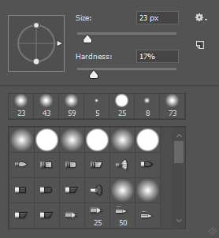
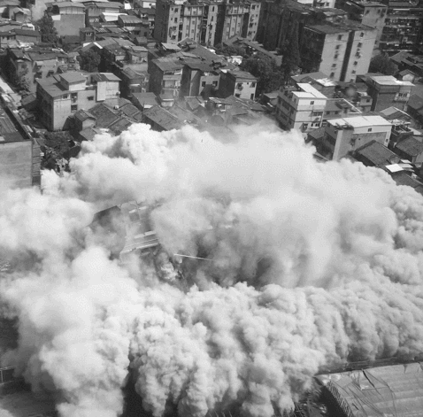

Welcome - Resources - Tools - The Cowboy Trick - Vanishing Point - Post Processing

Important Photoshop Tools
Here are some important resources to help you with your journey!
The Polygonial Lasso Tool
 By default, the Polygonal Lasso Tool is hiding behind the standard Lasso Tool in the Tools panel. To get to it, click on the Lasso Tool, then hold your mouse button down until a fly-out menu appears showing you the additional tools that are available. Select the Polygonal Lasso Tool from the list. Once you've selected the Polygonal Lasso Tool, it will appear in place of the standard Lasso Tool in the Tools panel. To switch back to the Lasso Tool later, click and hold on the Polygonal Lasso Tool, then select the Lasso Tool from the fly-out menu. With this tool, you should practice on outlining objects such as shoes, hands, boxes, and many other common objects that you want to select and cut.
Practice like this image to the left often. This tool shouldn't be used against something such as hair, fabric, and smaller objects like so.The risky part of this tool is that, you will have to outline an object in one go unless you can to splice it piece by piece and then put it back together.
After outlining an object, you can shortcut and tell Photoshop to finish the rest by pressing ENTER. If you are satisified with the outline, you can cut the piece off by using CTRL+C or CTRL+X.
This tool can function together with another tutorial in this website called, "The Vanishing Point" as you can take images and use it in a collage. Examples you can use these tools together is like a trying to make a person giant or tiny in a specific location. Or making fake cities such as combining locations like Oregon, New York City, and Washington together to make a fictional world. Even the GTA devs from Rockstar do the same when creating concept art.
Important note, if you are going into the professional industry scene, remember all of your sources so you can credit them as all collage images are not meant to be free and deserve some recognition too.
Color Range


The Color Range command selects a specified color or color range within an existing selection or an entire image. If you want to replace a selection, be sure to deselect everything before applying this command. The Color Range command is not available for 32‑bits-per-channel images. Open an image of a person, and select the layer that contains the person—the portrait layer. In the Properties panel, go to Quick Actions and click Remove Background. This automatically creates a layer mask that hides the background around the person.
This is a MUCH better way on trying to select someone's hair and then remove the background. You shouldn't use it to select it similar to a lasso but instead, to remove backgrounds in more annoying areas. The huge benefit from this tool is that many professional industries use this tool, which is why you're able to see 4K images of models on posters and magazines everyday, perfectly shopped out.
It can also be used in more simple terms such as a picture of an object with just a white background or greenscreen. The magic wand tool isn't that good as it detects much less and does not rely on AI learning. Color range is similar to other Adobe plugins such as content-aware that is AI learning to detect backgrounds and enhances everyday if you're linked with Creative Cloud. If not, you'll be using a certain about of limited data but still is fine if you're offline.
This tool isn't PERFECT as there may be minor errors but if you do see some, try to use an eraser with the hardness less than 35%. to take away some few errors that you may see.
Eraser (For Clouds and Smoke)
 The eraser is basically a brush which erases pixels as you drag it across the image. Pixels are erased to transparency, or the background colour if the layer is locked. The first step I think you should do is to make another layer and make it 50% grey. The reason of this is to see what you can erase and see its accuracy.
If you right click within your canvas, you can find your hardness and size sliders. This is SUPER useful instead of having to go to the properties to manually adjust it.
So, why is the eraser tool so good? You can use it for SMOKE and CLOUDS. Here is a very quick example that you can erase clouds and smoke from debris like demolition and repurpose it in a collage.
You can also erase a subject that is not the smoke or cloud images and have them fade into the smoke as if they were close to it in real life. You should be careful when creating a smoke cloud because if you're not satisified with it, you would have to go back to the original image and recreate it. Or you can make a mask layer and get through a lot less stress when creating these materials.
My best recommendation when using these is in these steps:
- Create a grey background, one layer behind the smoke.
- On top of that layer, convert the smoke layer into a mask.
- Erase on what is desired. You can invert the colors to heal or "un-erase."
Back to Top